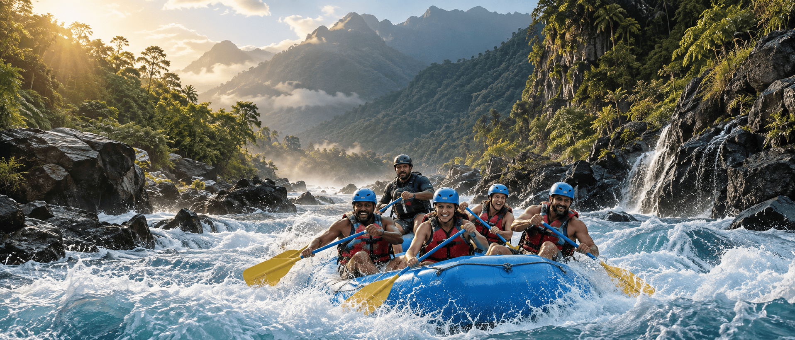
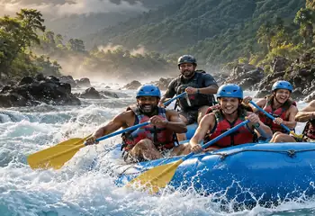

Our mission is to create safe, exciting, and unforgettable whitewater experiences. We bring people closer to nature through professionally guided adventures built around teamwork, discovery, and respect for the rivers we explore.

Our mission is to create safe, exciting, and unforgettable whitewater experiences. We bring people closer to nature through professionally guided adventures built around teamwork, discovery, and respect for the rivers we explore.
Kiskeya Rapids began with a small group of river lovers who wanted to share the thrill of whitewater with their community. The first trips were simple: a raft, a skilled guide, and a love of the outdoors.

Today, we welcome new paddlers and experienced adventurers alike. Our team continues to build memorable trips around clear instruction, good company, and the beauty of the river.